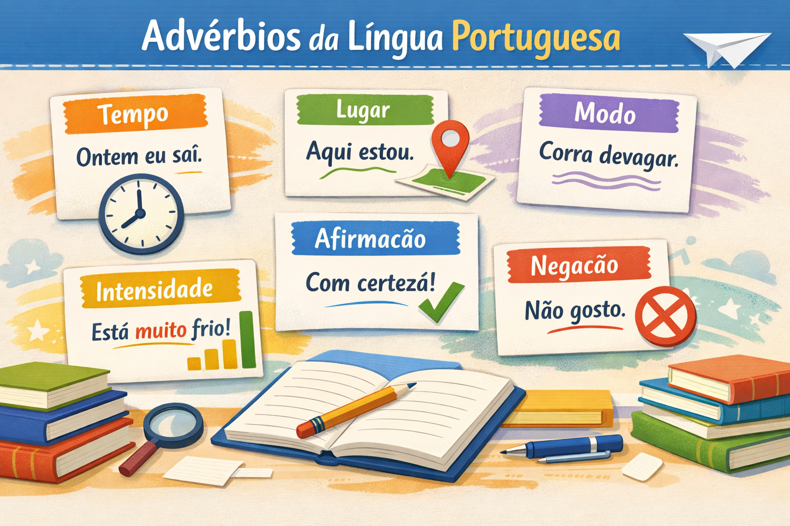

Advérbios da Língua Portuguesa: tipos, classificações, usos e exemplos explicados de forma simples
Estude os advérbios e suas funções na indicação de tempo, lugar, modo, intensidade, afirmação, negação e dúvida.